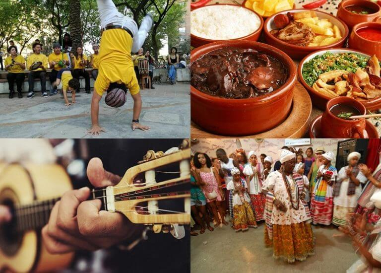
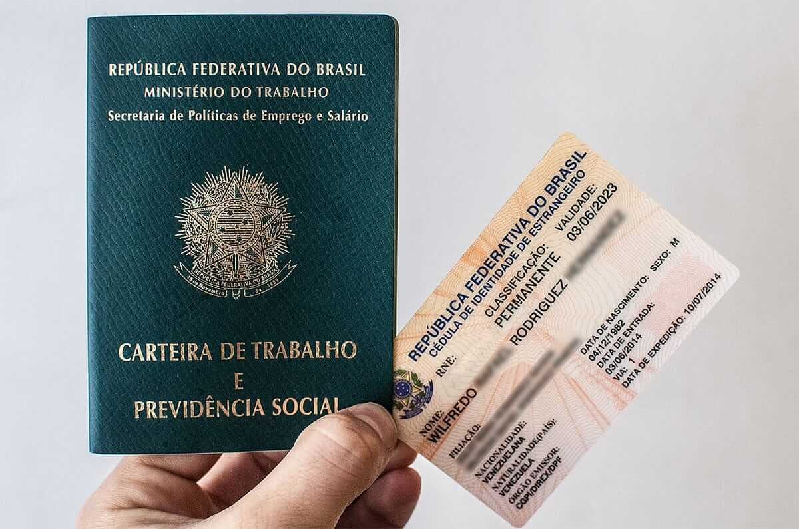
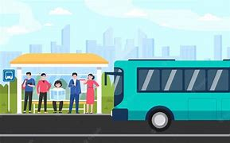

1. Diferenças culturais 1. Diferencias culturales 1. Cultural Differences
O Brasil é um país diverso e acolhedor, mas cada região tem suas próprias expressões, comidas típicas e costumes. Um "bom dia" e um sorriso podem abrir portas!
Brasil es un país diverso y acogedor, pero cada región tiene sus propias expresiones, comidas típicas y costumbres. ¡Un "buen día" y una sonrisa pueden abrir puertas!
Brazil is a diverse and welcoming country, but each region has its own expressions, typical foods, and customs. A "good morning" and a smile can open doors!
É comum abraçar ou beijar no rosto ao cumprimentar, dependendo da região. Além disso, o brasileiro costuma ser muito informal, mesmo em situações profissionais.
Es común abrazar o besar en la mejilla al saludar, dependiendo de la región. Además, los brasileños suelen ser muy informales, incluso en situaciones profesionales.
It is common to hug or kiss on the cheek when greeting, depending on the region. Also, Brazilians tend to be very informal, even in professional situations.

2. Documentação
A documentação no Brasil é fundamental para garantir o acesso a diversos serviços e direitos.
O CPF é essencial para abrir contas bancárias, declarar impostos e fazer compras importantes. Solicite seu CPF aqui.
O RNM é o documento de identificação oficial para estrangeiros residentes no Brasil. Solicite seu RNM aqui.
A CLT garante direitos como salário mínimo, férias e 13º salário. Para trabalhar formalmente, você precisa da Carteira de Trabalho Digital: Solicitar aqui.
Para mais informações, visite o Portal de Serviços do Governo.
3. Saúde: Sistema Único de Saúde (SUS)
O SUS oferece atendimento médico gratuito a todos os cidadãos e residentes. Cadastre-se para ter acesso a consultas, exames e medicamentos.
Para serviços especializados ou emergências, considere também um plano de saúde privado.
4. Educação e idiomas
O Brasil tem escolas públicas e privadas. Pesquise as opções disponíveis na sua região.
O ENCCEJA é gratuito e permite obter certificação de Ensino Fundamental ou Médio.
O ENEM é a porta de entrada para universidades. Migrantes podem concorrer a vagas via PROUNI e SISU.
Aprender português é fundamental para se integrar e aproveitar ao máximo a vida no Brasil.
5. Emprego: Oportunidades e desafios
O mercado de trabalho pode ser desafiador para estrangeiros. Mantenha o currículo atualizado e pratique português para entrevistas.
Dicas importantes:
- Mantenha seus documentos em dia (RNM, CPF, CTPS)
- Faça networking e participe de grupos profissionais
- Considere cursos de capacitação profissional
- Valide seus diplomas e certificações estrangeiras
Para migrantes empreendedores:

6. Transporte: Opções e dicas
O Brasil tem ônibus, metrôs e trens. Conheça as opções da sua região e obtenha um cartão de transporte.
- Bilhete Único - São Paulo
- Metrô de São Paulo
- CPTM - Trens Metropolitanos
- EMTU - Ônibus Intermunicipais
Dicas importantes:
- Baixe aplicativos de transporte público da sua cidade
- Mantenha sempre créditos no cartão de transporte
- Verifique os horários de funcionamento
- Em grandes cidades, evite horários de pico se possível
Para viagens interestaduais:
ONGs de Apoio a Migrantes
Fale Conosco
Tem dúvidas ou sugestões? Envie uma mensagem!